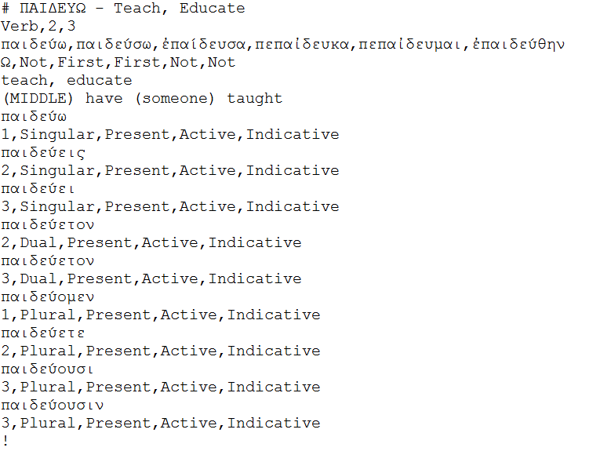

Development
This idea began when I was having trouble looking up vocabulary words during sentence translations for class. Even after putting all of the vocabulary into Excel spreadsheets, it still took quite some time to find out what the stem for the word was, look up the definition and the form, and translate it. That's when I decided to make this program, to help me study and complete my homework. Unfortunately, I ended up finishing the Greek class before this program.
Greek Lexicon is made purely in Python 2.7, with the database in Sqlite3 via SQLiteStudio. I chose Sqlite3 for the database was purely for the portability.
Greek Lexicon is a command-line program, and supports a variety of commands. The most of these is the info command. This will return information on the greek word the user typed in. The info command takes a few parameters, the first being the greek word. The other parameters are optional: -v, -d, -u. The -v parameter for info makes it so that the returned information is detailed, and not just the gist. The -d parameter also forces the definition of the word to be returned as well. Finally, the -u parameter will ignore all accent and breathing marks for the words.

The first command had all three optional parameters. Notice that it is more detailed than the second, and include the definition. Also, notice that the first Greek word was unaccented, while the second one is.
The information stored in the database is retrieved via text file. When an update command is issued to the Lexicon, the database manager script will open and read the file, and insert any words not already in the database.

The text file that loads into the database. This is for παιδεύω, the classical Greek word for teach.
Current Status
Currently, Greek Lexicon can store and retrieve verbs, nouns, adjectives, pronouns, and participles. It cannot store or retrieve irregular words. At the moment, only a few words are actually stored in the database (this is the tedious part).
Planned Features
The biggest hurdle for Greek Lexicon's completion is the vocabulary. To help with that, I am planning on adding support for other ways of inserting into the database. This includes via Excel (since I already have a large Excel spreadsheet of most of the words), and via scraping the textbook pdf.
I am also planning on implementing some heuristics algorithms to try to predict the endings and stems of words, in order to speed up the vocabulary insertions.
Finally, probably the most ambitious part, is the sentence translations. This will be quite difficult as order of words is not as important in Greek, but certain meanings change quite drastically based on context.